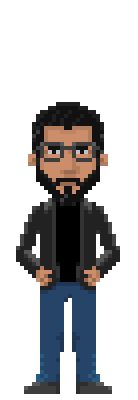

Jorge Salazar Tovar

Hey, I'm Jorge, a software developer with +10 years of experience. Collaborator in the Pyxis ecosystem since 2014 and co-founder of Guayoyo, a cybersecurity startup founded in 2016. I also usually make graphic records and participate as a speaker in meetups and technologies events.
I were compiled in Venezuela and deployed in Uruguay. specifically in Montevideo, where I live with my wife Dani and our dog, Tito Valentino.
Passionate and curious about secure software development, cybersecurity and open source. Also interested in Agile, Linux and DevSecOps.
Creator of Con Garabatos (Instagram &Twitter), a hobby project where I intervene some pictures with drawings.